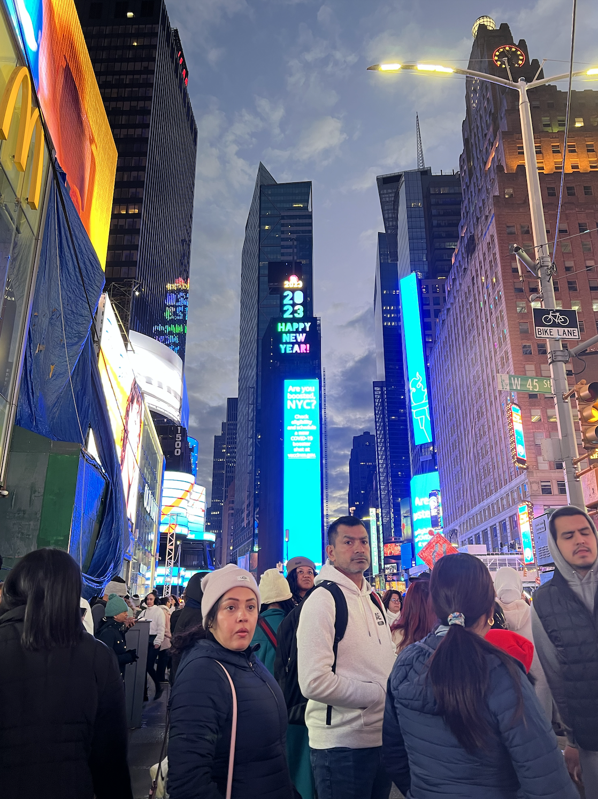
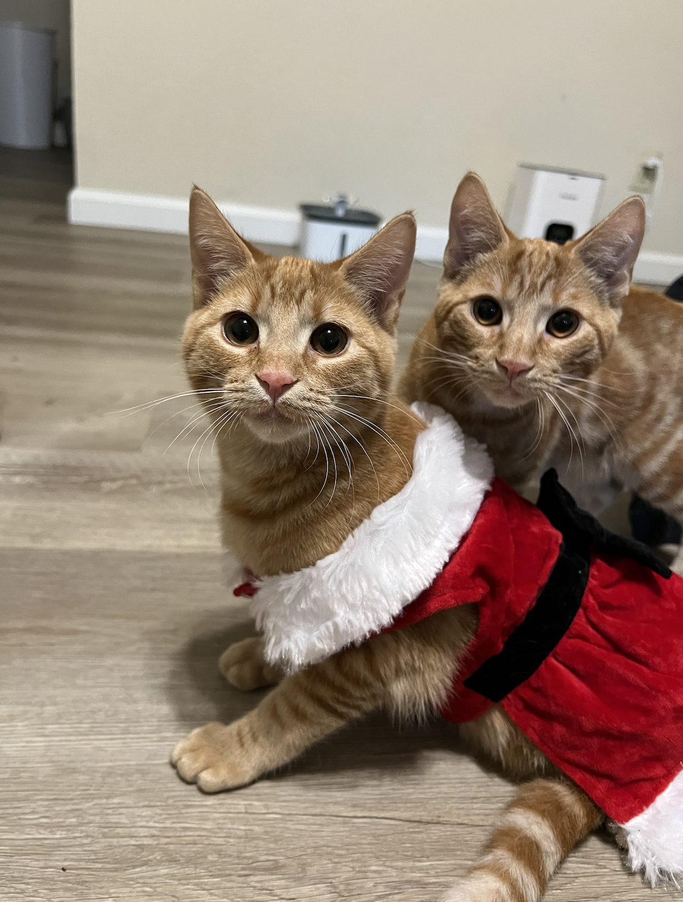
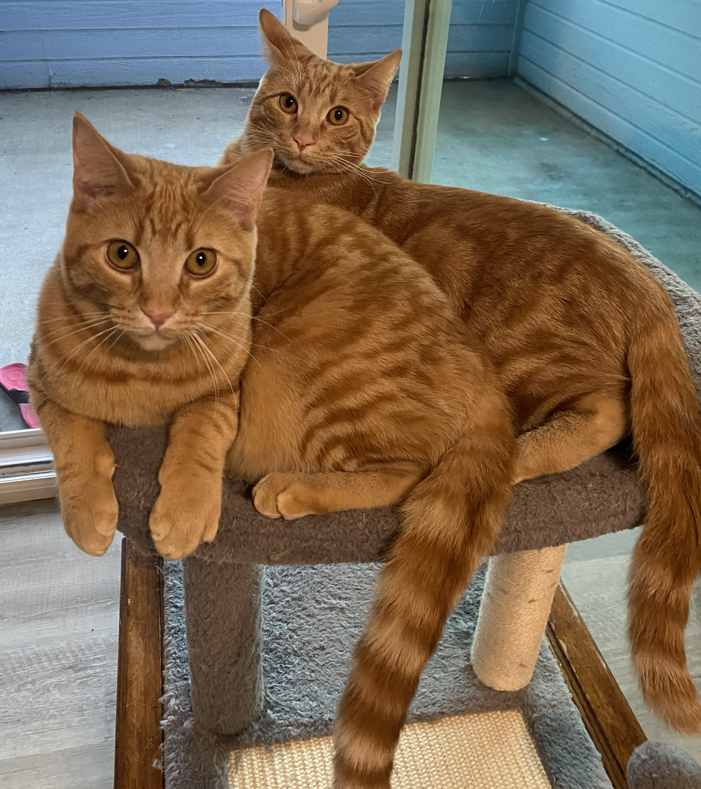
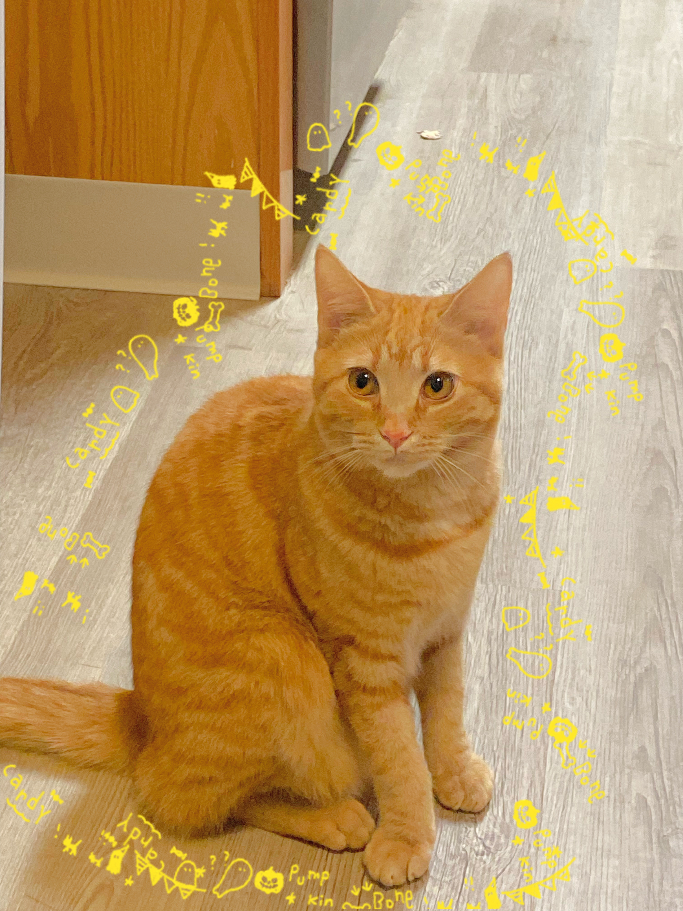

My name is Tran Vuong.
I am currently junior year and majored in Computer Science.
I come from Vietnam.
Beside coding, I also love to travel around the world.
These photos I took when I traveled before:

Hawaii
My first time in Hawaii was on summer 2022. I love the food and atmosphere there. The views are incredibly amazing. Looking forwarding coming there more in the future.

New York
First time in New York was on new year 2023. I was overwhelmed by the number of people in the Time Square on January 1st. They came there to celebrate new year together.
The time was like completely stop when they count down together and wait for the ball drop. I was suprised because people are so enjoyable celebrating this together although they needed to wait there for like 12 hours.
It was also so cold. I can see the air when I breathed. However this experience is amazing and unforgettable to me. I would try to come again in the future, maybe another season, to feel another kind of atmosphere.
My other favorite activites:
- Swimming
- Watching movies
- Cooking
- Photography
- Playing with my two orange cats
These are photos of my cats



We adopted them from this shelter Humane Society Sillicon Valey